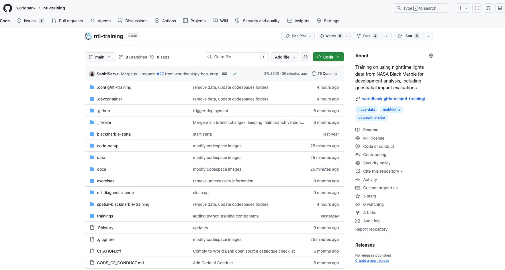
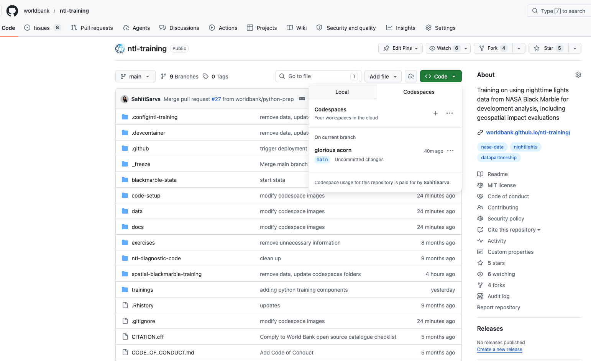
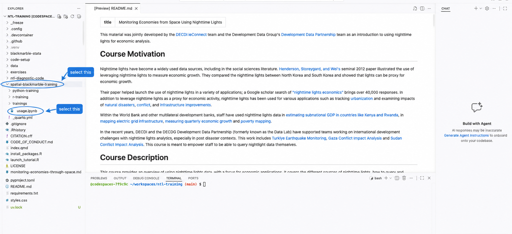
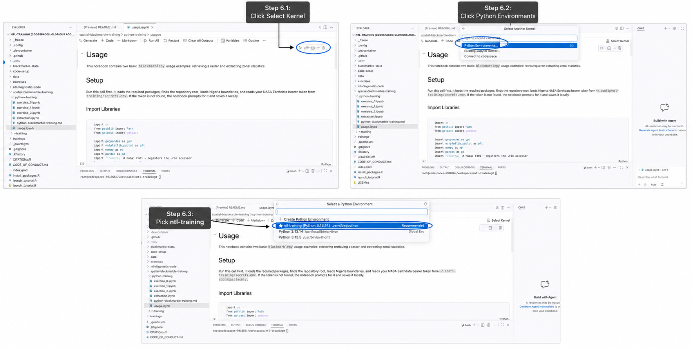

1 Steps to use GitHub Codespaces
GitHub Codespaces lets you run the training materials in a browser-based development environment.
1.1 Step 1: Create GitHub
Create a free GitHub account at github.com or sign in to your existing account.
1.2 Step 2: Open training repository
Open the ntl-training repository.

1.4 Step 4: Open your codespace
GitHub will open the codespace in a browser-based VS Code window. Wait up to 2 minutes for this to complete setup.

1.5 Step 5: Open a notebook
Use the file explorer on the left to open the notebook you want to run.

1.6 Step 6: Select kernel
Click Select Kernel in the upper-right corner of the notebook, then choose the available Python kernel.

1.7 Step 7: Run!
Run the notebook cells from top to bottom.